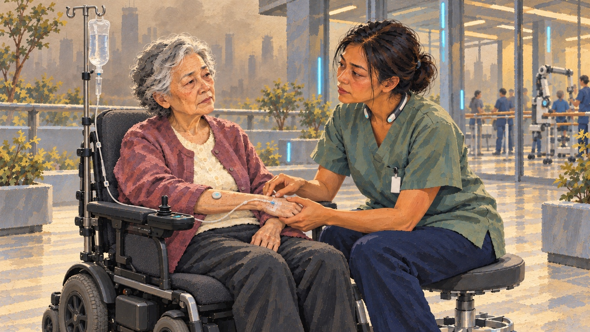

Ageing, staff shortages and empty buildings: uneven local pressures.
SCENARIO 01 / READ THE SCENARIO
Silver City Compact
The World in 2070
This is an East Asia where cities enter into agreements across national borders, exchanging care capacity and energy resources.
In 2070, population ageing and a rapidly changing climate have placed pressures on national governments that they cannot manage alone. In response, cities have developed a system of cooperation known as the Silver City Compact.
In this world, East Asian cities have taken on distinct roles. A few still attract working populations through finance and trade. Cities with liveable climates and ample building stock have become care cities, welcoming older residents from elsewhere and working with training cities to recruit care workers. Cities where scorching summers or freezing winters have made life increasingly unsuitable for frail older people have become centres for energy production and automated manufacturing, as factories and energy facilities now require few people to live nearby. Port cities and aviation hubs move energy, equipment and people to the care cities.
Care cities sit at the heart of the City Compacts. They remain as densely built as cities in the 2020s, but their office blocks and department stores have been replaced by caring services. The floors house different “silver agencies”, offering support ranging from independent living, rehabilitation and social activities to dementia care and round-the-clock medical assistance. Robots handle deliveries, cleaning, routine checks and some everyday care. Large numbers of care workers still provide hands-on personal care, rehabilitation, help with eating and companionship, and maintain contact with families. Most come from other cities under compact agreements, which also safeguard their residency status and ensure that their years of service are recognised.
The people concentrated in these cities are those who need care, rather than office workers. Urban housing offers poor value for money, while remote medical consultations and digital work have become well-developed. Most office workers therefore live in suburbs or rural communities, where they have more space and lower living costs. Care resources and advanced diagnostic equipment remain concentrated in cities, providing older residents with a comprehensive range of services in one place.
Both the meaning of “city” and the reasons for city cooperation have changed. East Asian cities in 2070 look as dense as they did in the 2020s, but the reasons for that density are different. Cities bring together people who need care and the capabilities that give them a role in the exchange of care capacity: equipment manufacturing, energy production, workforce training and transport.
Content based on Worldview_02 Oct
How did we get here? The Transition Path
2026–2035
Finding Their Own Solutions
Population ageing, labour shortages and vacant buildings emerge at different rates across East Asian cities. Japan’s annual number of deaths is expected to peak around 2040. South Korea is a generation behind, but its population is ageing more rapidly.
Sendai, Japan, is one of the starting points. To address the caring needs of ageing people, the city works with neighbouring local authorities, hospitals and operators to convert buildings near healthcare and transport hubs into care accommodation.
Wonju, in South Korea’s Gangwon Province, faces a different situation. An inland city and a major centre for the country’s medical device industry, its population is still growing, but the proportion of older residents is rising rapidly. The city government begins looking for additional care options for retirees and other residents.
Other South Korean cities, however, face similar problems: shortages of beds, funding and care workers. Neighbouring areas are also ageing, and arrangements for recruiting care workers from abroad are still in their infancy. Domestic options soon reach their limits.
The city government and a small number of relevant organisations therefore begin referring some older residents to Sendai, where existing facilities and a more established care workforce make places easier to secure. These small-scale referrals establish the first links between the two cities. For both, cross-border care remains one option among many, and both continue to develop local provision.
2035–2045
Climate Pressures Expand Cross-Border Referrals
Extreme weather becomes increasingly frequent, including in inland Wonju. Heatwave seasons grow longer each year, while occasional severe winter cold spells place simultaneous strain on heating and electricity supplies. For older residents, staying in the city becomes a risk.
Many other cities face similar combinations of climate and demographic pressures. National governments recognise that approving arrangements case by case is slow and not practical, cannot keep pace with population ageing and climate change, and requires detailed knowledge of local circumstances. Allowing cities to coordinate these arrangements offers a way to ease fiscal pressures. Agreements between cities are also less likely to be interpreted as diplomatic concessions between countries.
Meanwhile, Japan is approaching its peak in annual deaths, and the older populations of some regional cities have already begun to decline. Care facilities built for the previous generation’s ageing population start to fall vacant. Local authorities need new sources of income but lack staff. They are therefore keen to welcome older residents from other countries and begin working with training institutions in Cebu, in the Philippines, to recruit care workers.
2045–2055
The First Formal Compacts
The Japanese and South Korean governments establish a framework for pre-authorised regulatory sandboxes. City arrangements that meet financial, medical and labour standards can operate within these sandboxes without seeking approval for every individual decision. National governments retain authority over immigration, defence and security, while foreign nationals with compact contracts find it easier to obtain visas through the national approval process.
Sendai, Wonju and Cebu establish the first formal Silver City Compact, with a permanent fund, joint decision-making procedures and continuing obligations to fulfil their commitments.
Wonju and Gangwon Province exchange energy and equipment for long-term access to care places. Hydrogen and ammonia produced on Gangwon’s east coast are shipped through the Port of Donghae to Sendai. Wonju’s medical device industry and automated factories supply care robots and medical equipment.
Sendai provides accommodation in an environment with cooler summers and milder winters, alongside beds and care services.
Training institutions in Cebu work with Sendai to design care and language courses. In return, Sendai helps fund local care provision in Cebu.
Other cities follow. Japanese cities with vacant care beds need income, while insurers and investors give cities with compacts more favourable credit assessments, lowering their borrowing costs.
2055–2065
Everyday Life Becomes Embedded in the System, Raising the Cost of Leaving
As cooperation becomes more established, its benefits expand. Care workers can carry their qualifications and years of service between member cities, while arrangements are made for housing and school transfers. Compacts begin to manage these conditions jointly.
Residents and businesses become increasingly dependent on the compact. The termination of a single agreement can affect a family’s employment, home and care arrangements all at once.
2065–2070
A City’s Membership Begins to Determine Its Residents’ Choices
Some cities succeed in joining; some create their own compacts; some are excluded. Differences in financial capacity, previous contributions and service needs also create divisions within the networks.
National governments try to narrow these gaps through subsidies and basic guarantees, but must negotiate the allocation of resources with existing members.
Content based on Worldview_02 Oct
This is my daily: Lien & Mrs Song

It was August 2070, and Lien was starting her early shift at a Silver City Compact care centre in Sendai.
She wheeled Mrs Song into the courtyard to sit in the shade for a while. There was still a little coolness in the morning air. Lien glanced at the environmental display beside the door: 27 degrees, with 34 forecast for the afternoon.
“A little longer, then we should head inside.”
Mrs Song was from Wonju. The previous winter, an unusually severe snowstorm had blocked the roads for a week. Her home had lost power, and neighbours had pulled her to an emergency shelter. Her daughter had first arranged temporary care locally, then compared care centres in Sendai covered by a compact with Wonju. This one offered a Korean-speaking team, guaranteed rehabilitation sessions and a moving-in date they could confirm in advance. Her daughter visited once a year and joined care discussions by video call between visits.
Lien came from Cebu. 10 years earlier, she had graduated from an academy jointly run by a Japanese care organisation and Cebu City, where she had learnt Japanese, Korean and care skills. With her compact card, she had come to Sendai with two-year-old Nico. The qualifications and years of service recorded on the card were recognised across the compact’s member cities. Japan’s national government issued her residence visa; the compact coordinated her employment, housing, and her son’s childcare and school place.
They went back inside and took the lift to the rehabilitation department on one of the upper floors. Along the corridor, the former palliative care ward had been converted into a “Digital Sustainability Ward”. Older residents who could no longer leave their beds lay connected to drips, wearing virtual reality headsets and neurolinks. In virtual worlds, they continued to enjoy youthful bodies and social lives.
In the rehabilitation centre, a robot supported Mrs Song’s arm while Lien counted out the rhythm of the exercise.
“I dreamt about that snow in Wonju again,” Mrs Song said. “All the lights had gone out. I kept feeling around, but I couldn’t find the phone.”
“Shall we leave a little light on tonight, Mrs Song?” Lien asked. “I’ll ask the bot-nurse to set it up now.”
During her lunch break, twelve-year-old Nico sent her a photograph of his homework, entitled “My Home Town”. He had written about Sendai, then asked: “Does Cebu count too? Even though I don’t remember it?”
That afternoon, Lien attended the compact’s service committee as a staff representative. They were deciding how to allocate places on a new floor. The Wonju representative wanted more beds for the city’s residents. Local authorities around Sendai wanted places reserved for local families on waiting lists. The Cebu representative reminded the committee that any additional places would also require funding for the next group of care workers’ training and housing.
Early that evening, Mrs Song’s daughter called by video to ask how her mother’s day had been. She also wanted to know whether the dispute over the new floor would affect the quality of her mother’s care.
“Her care will continue,” Lien said. “What we discussed today was who would be able to move in next.”
After the call, Mrs Song looked out of the window.
“Does it snow where you come from?”
“Never,” Lien said. “It’s too hot. But hardly anyone lives in our old neighbourhood now.”
Back at her accommodation, she looked at the photograph in the sitting room: herself with one-year-old Nico in a restaurant in Cebu. She remembered what it had been like to live there and could still feel the humid, but familiar smell and breeze. Now, little remained of the neighbourhood but sun-bleached roofs and empty lanes. Even the training centre had moved to a new campus in the hills. She missed Cebu, but the home she remembered was no longer there to return to.
In another five years, she would have completed fifteen years of service under the compact and would be eligible to apply for Japanese citizenship.